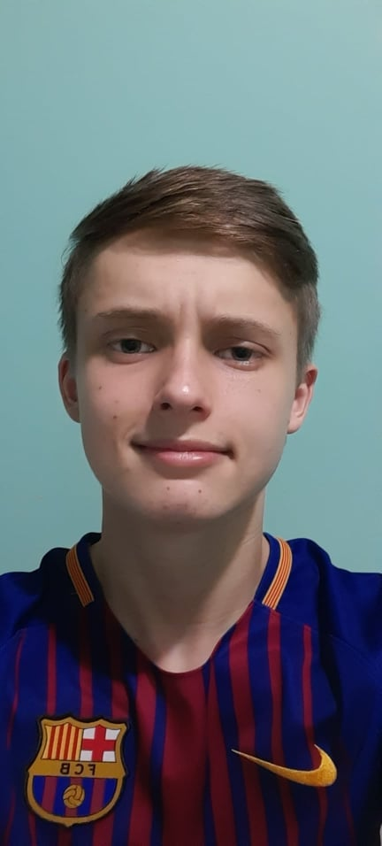

Perfil profissional com curriculum
Matheus Augusto Canteri
Estagiário
(42)9 9807-8281
canterimatheu@gmail.com
| Enviar e-mail
Breve Biografia
Tenho como principal qualidade a calma e paciência, sempre com muito respeito e com um sorriso no rosto, consigo me aprimorar e pegar o ritmo em pouco. Tenho 19 anos, morava na cidade de Ipiranga - PR, porém, me mudei recentemente para Imbituva - PR a questão de estudos e trabalho presencial. Sempre vivi em cidade pequena e conclui meus estudos recentemente em uma escola pública.
Formação acadêmica
● Ensino Médio - Concluído - Colégio Estadual Dr. Claudino dos Santos - CCS.
● Atualmente cursando o 2°bimestre em Análise e Desenvolvimento de Sistemas no IFPR Irati (Instituto Federal do Paraná).
Experiência profissional
● Atuando como Jovem Aprendiz na empresa Bsoft.
Link para o Linkedin
● Link para o meu perfil profissional no site linkedin.
E-mail para contato
● Enviar e-mail
Link para o meu site com meu hobbie
● Hobbie.
.
